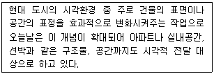
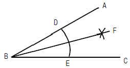
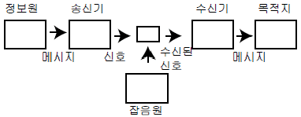
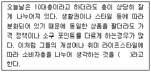

시각디자인기사 (2006-05-14 기출문제)
1과목: 시각디자인론
1. 생산과 유통활동에서 유기적 관계를 갖고 낭비를 없애고 경쟁력 배양을 목표로 하는 시스템은?
- JIT(Just In Time)
- MBO(Management By Objectives)
- PDS(Plan Do See)
- POC(Planning Organizing Controlling)
(정답률: 알수없음)

2. 컴퓨터의 드로잉 프로그램(Drawing program)에서 펜 툴로 자연스럽게 부드럽게 정리된 형태의 곡선을 그릴 때 사용하는 곡선은?
- 전자 곡선 (Digital curve)
- 베지어 곡선 (Bezier curve)
- 유틀리드 곡선 (Euclid curve)
- 아르키미데스 곡선 (Archimedes curve)
(정답률: 55%)
3. 다음 중 그라비어(Gravure) 인쇄의 장점으로 옳은 것은?
- 물의 사용으로 편리하다.
- 평판에 비해 비용이 저렴하다.
- 판의 내쇄력이 우수하여 대량생산이 가능하고 농담계조가 풍부하다.
- 유연한 판을 사용함으로 다양한 피인쇄체에 인쇄가 가능하다.
(정답률: 알수없음)
4. '서체는 잡지, 신문 등의 인쇄물에서 분문 또는 문안으로 쓰이는 비교적 작은 글자인 ( )과 제목이나 각종 표지, 간판 브랜드 명에 쓰이는 디스플레이 타입(Display type)으로 나뉜다. 에서 ( )안에 들어갈 적당한 단어는?
- 바디 타입
- 돋움체
- 산세리프체
- 트루타입
(정답률: 34%)
5. 상표권의 존속기간은 상표권의 설정등록이 있는 날부터 몇 년인가?
- 8년
- 10년
- 20년
- 50년
(정답률: 알수없음)
6. 다음 디자인의 영역 중 주로 시각적인 전달수단으로 이용하여 사람과 사람의 관계를 연결해 주는 것은 무엇인가?
- 산업 디자인
- 프로덕트 디자인
- 커뮤니케이션 디자인
- 환경디자인
(정답률: 알수없음)
7. '천박하며 저속한 모조품, 대량생산된 싸구려 상품이 마치 훌륭한 진품인 것처럼 스스로를 기만하는 현상' 을 의미하며, 통속적인 디자인과 그러한 유형을 일컫는 말은?
- 멤피스 (Memphis)
- 아르느보 (Art Nouveau)
- 조영우의 추태 (Cho's play)
- 키치 (Kitsch)
(정답률: 알수없음)
8. 다음 중 바우하우스 운동에서 볼 수 있는 작품의 특징으로 가장 적합한 것은?
- 유연하고 유동적인 장식적 곡선 사용
- 자연대상을 기하형태로 환원, 면과 입체로 재구성
- 기하학적인 장식요소를 대칭형으로 구성
- 단순 명쾌한 형태와 기능적 구조를 존중
(정답률: 알수없음)
9. 컴퓨터 그래픽스의 용어 중 제작된 모델링 데이터에 색상과 질감, 조명등 실제감을 주는 최종 형상화 작업을 무엇이라고 하는가?
- 모델링
- 렌더링
- 컬러링
- 애니메이션
(정답률: 알수없음)
10. 누구나 알고 있는 대상이나 예술형태를 메시지의 효과적인 전달을 위해 차용하는 기법을 무엇이라고 하는가?
- 위트(wit)
- 패러디(parody)
- 향수(nostalgia)
- 기억(memory)
(정답률: 100%)
11. 소비자의 호기심을 야기시키기 위해 조금씩 단계별로 내용을 노출시키는 광고는?
- Target Audience
- Market Segmentation
- Teaser
- Positioning Strategy
(정답률: 알수없음)
12. 광고주가 선정한 사람에게 직접적으로 메시지를 전달하는 미디어는?
- Editorial
- Direct Mail
- Small Graphic
- Package
(정답률: 알수없음)
13. 포장 디자인의 기능이 아닌 것은?
- 보존성
- 저렴성
- 편리성
- 상품성
(정답률: 100%)
14. 전자출판 프로세스가 아닌 것은?
- 사진식자
- 사진 수정 및 합성
- 출력
- 스캐닝
(정답률: 알수없음)
15. 다음은 무엇에 관한 설명인가?

- 홀로그래픽
- 픽토그래픽
- 타이포그래픽
- 수퍼그래픽
(정답률: 알수없음)
16. 다음 중 방송사업자, 영상제작자의 권리와 이에 인접하는 권리를 보호하고 방송, 영상의 공정한 이용을 도모함으로써 문화향상에 이바지함을 목적으로 하는 법은?
- 디자인보호법
- 저작권법
- 실용신안특허법
- 발명특허법
(정답률: 알수없음)
17. 환경오염 문제와 관련하여 생태학적으로 건강하고 환경보존에 해를 '끼치지 않도록 디자인된 제품이나 포장을 뜻하며, 이에 염두에 두고 전개시키는 디자인 행위는?
- 굿 디자인 (good design)
- 그린 디자인 (green design)
- 스페이스 디자인 (space design)
- 안티 디자인 (anti - design)
(정답률: 알수없음)
18. 기업의 이미지 제고를 위해 독창적으로 만들어진 글자 디자인은?
- 마스코트
- 캐릭터
- 심볼
- 로고타입
(정답률: 알수없음)
19. 대기업은 물론 많은 중소기업에서도 디자이너를 직접 고용하거나 디자인 컨설턴트(Consultant)를 활용하고 있다. 기업에서 디자인 컨설턴트를 활용하는데 있어 기대할 수 있는 장점으로 가장 거리가 먼 것은?
- 자체 조직이 갖는 타성에서 벗어난 참신성을 기대할 수 있다.
- 기업의 전략을 외부에 노출시키지 않고 비밀을 유지하기에 편리하다.
- 중소기업의 경우 활용 빈도가 적을 경우 상대적으로 비용부담이 적다.
- 일반적으로 특정 분야만을 집중적으로 작업하기 때문에 전문성이 높다.
(정답률: 알수없음)
20. 과거의 일반적인 미디어들과 달리 인터넷으로 TV, 영화 프로그램을 유저(User)가 자유로이 선택하고 조작하게 하는 커뮤니케이션 방식은?
- 인터렉션 (Interaction)
- 멀티미디어 (Multimedia)
- 네트워크 (Network)
- 컨텐츠 (Contents)
(정답률: 알수없음)
2과목: 조형심리학
21. 대부분 반원형의 엷은 셀룰로이드 판으로 되어 있으며 각도 측정에 사용되는 용구는?
- T - 자 (T-square)
- 분도기 (portractor)
- 눈금자 (scale)
- 운형자 (french curves)
(정답률: 알수없음)
22. "파르테논 신전" 등 고건축물에 많이 적용되었던 비례는?
- 루트 비례
- 몬드리안 비례
- 피보나치 비례
- 황금 비례
(정답률: 알수없음)
23. 비대칭 균형을 이룬 광고의 이미지로 적절한 것은?
- 형식적이며 정적이다.
- 역동적이며 운동감이 있다.
- 고품스럽고 질서 정연하다.
- 세련되고 우아하다.
(정답률: 알수없음)
24. 다음 중 수학적 규칙성에 속박받지 않는 자연스러움을 중요하게 여기는 형태는?
- 기하학적 형태
- 오토매틱 형태
- 유기적 형태
- 인공 형태
(정답률: 알수없음)
25. 다음 중 조형(造形)이 될 수 없는 것은?
- 손잡이가 셋 달린 도자기
- 아름다운 석양녘의 거미줄
- 어느 단체의 심볼마크
- 색종이로 꼬아 만든 신발
(정답률: 알수없음)
26. 시각적 질감을 설명한 것 중 바른 것은?
- 물체의 빛에 대한 반응이다.
- 물체의 구조에 대한 반응이다.
- 면직물 표면의 특성만을 의미한다.
- 직접 만져서 확인할 수 있어야 한다.
(정답률: 90%)
27. 구성 화면에서 통일성을 주는 방법으로 부적절한 것은?
- 여러 구성요소들을 서로 근접하도록 한다.
- 요소들을 서로 연결 시키기 위해 반복한다.
- 요소들을 연속하여 배치한다.
- 요소들을 다양하게 배치한다.
(정답률: 알수없음)
28. 다음 중 대비(contrast)에 대한 설명으로 틀린 것은?
- 서로 다른 부분의 조합에 의하여 생기는 것이다.
- 시각적 형태 강약에 형의 감정 효과이다.
- 형태, 크기, 색채, 질감, 방향, 위치, 공간, 중량감의 대비 등이 있다.
- 숲속의 나무, 해변의 모래, 바다의 파도 등 자연속에서 그 예를 찾을 수 있다.
(정답률: 알수없음)
29. 다음 중 착시현상에 포함되지 않는 것은?
- 길이의 착시
- 면적과 크기와 착시
- 방향의 착시
- 무게의 착시
(정답률: 알수없음)
30. 제도에서 척도에 속하지 않은 것은?
- 현척
- 축척
- 원척
- 배척
(정답률: 알수없음)
31. 다음 중 모든 변의 길이가 같고 내각의 크기가 모두 같은 형을 통털어 무엇이라고 하는가?
- 직사각형
- 사다리꼴
- 마름모꼴
- 정다각형
(정답률: 알수없음)
32. 다음 중 시지각의 항상성 종류가 아닌 것은?
- 크기의 항상
- 무게의 항상
- 형의 항상
- 밝음의 항상
(정답률: 알수없음)
33. 다음 중 신조형주의를 주창하고 수평, 수직의 직선으로 단순하고질서있는 화면을 구성한 사람은?
- 몬드리안
- 모홀리 나기
- 기오르기
- 얀 치홀트
(정답률: 알수없음)
34. 방사형 구도에 관한 설명 중 적절치 않은 것은?
- 좁은 공간도 넓게 보이게 할 수 있다.
- 사람의 눈을 쉽게 끌 수 있다.
- 에너지가 확산해가는 이미지이다.
- 달아나려고 하는 힘이 작용하기 때문에 충돌이 일어난다.
(정답률: 알수없음)
35. 동시에 여러 각도에서 하나의 인물이나 대상물을 바라보는 것으로 이집트 미술의 부조 등에 나타난 공간 표현법은?
- 구성주의
- 입체주의
- 표현주의
- 신조형주의
(정답률: 알수없음)
36. 각의 2등분 작도법에 관한 설명 중 잘못된 것은?

- ∠ABC의 꼭지점 B를 중심으로 임의의 원호 F를 그린다.
- D와 E를 중심으로 원호의 교점 F를 구한다.
- B와 교점 F를 통과하는 직선을 그리면 ∠ABC는 2등분 된다.
- ∠ABF = ∠CBF = 1/2 ∠ABC 이다.
(정답률: 알수없음)
37. 형태심리(Gestalt)에 관한 설명 중 잘못된 것은?
- 서로 가까이 있는 요소들은 하나로 뭉쳐져 보인다.
- 비슷한 성질을 가진 요소는 떨어져 있어도 덩어리져 보인다.
- 테두리 선으로 완전하게 연결되어야만 도형으로 인식된다.
- 비슷한 움직임을 지닌 것은 하나로 지각된다.
(정답률: 알수없음)
38. 글자의 크기를 측정하는 단위가 아닌 것은?
- 급
- 파이카
- 치
- 포인트
(정답률: 알수없음)
39. 인간은 지각에 대하여 편견을 가지고 있어 망막에서 일어나는 변화나 모호함에 관계 없이 사물에 대해 지속적이고 고정적인 인식을 하는 현상을 무엇이라고 하는가?
- 착시현상
- 시차현상
- 원근현상
- 항상현상
(정답률: 알수없음)
40. 화가 '렘브란트(Rembrandt Van Rijn)'로부터 비롯된, '렘브란트 라이티'에 대한 바른 설명은?
- 밝은 빛과 어둠을 대비한 효과로 표현한다.
- 다중노출법에 의해 물체를 겹쳐서 표현한다.
- 컴퓨터의 모션 블러(Motion blur)처럼 표현한다.
- 50% 하프톤(half tone)으로 토명도를 표현한다.
(정답률: 알수없음)
3과목: 광고학
41. 다음 중 레이아웃이 갖추어야 할 조건과 가장 거리가 먼 것은?
- 가독성
- 주목성
- 통일성
- 현실성
(정답률: 알수없음)
42. TV에서 광고만 나오면 채널을 돌려서 광고효과가 떨어진다는 것을 무엇이라고 하는가?
- Zapping
- Channel Mix
- Circulation
- Channel changes
(정답률: 알수없음)
43. 옥외 광고의 종류가 아닌 것은?
- 빌보드
- POP
- 네온
- 전광판
(정답률: 알수없음)
44. 소비자의 상품을 구매할 때 동일 상표의 상품을 습관적, 의식적으로 반복 구매하는 것을 무엇이라고 하는가?
- 브랜드 쉐어 (brand share)
- 브랜드 정책 (brand policy)
- 브랜드 로열티 (brand loyalty)
- 브랜드 리더 (brand leader)
(정답률: 알수없음)
45. 커뮤니케이션 이론 중, '매스미디어가 사람들에게 무엇을 하고 있느냐'하는 식의 종래의 입장에서 탈피, 대신 '사람들이 매스미디어를 가지고 무엇을 하느냐'는 입장에서 매스 커뮤니케이션 현상을 연구하고자 하는 이론은?
- 선별효과이론
- 이용과 충족이론
- 의제설정기능이론
- 문화계발이론
(정답률: 알수없음)
46. 소비자의 자기관여란 구매시에 있어서의 상품에 대한 관심도나 정신적, 시간적 관여의 정도를 말한다. 자기 관여의 정도와 관련이 있는 것은?

- 샤논과 위버
- 슈람
- 오스굿
- 호블랜드
(정답률: 알수없음)
47. 보는 이에게 즐거움을 주기 위해 유머를 만들어 내는 데는 여러방법들이 사용된다. 다음 중 유머광고의 특징에 해당되지 않는 것은?
- 생활의 단면
- 과장
- 부조화
- 휴머니티
(정답률: 알수없음)
48. 정보화 사회의 주체가 되는 정보의 특징이 아닌 것은?
- 신용가치성
- 부가가치성
- 문화성
- 소비성
(정답률: 알수없음)
49. 모든 광고는 글에 상당부분 의존하게 된다. 이러한 광고문안을 창조해내는 전문 직업인을 무엇이라고 하는가?
- 아트 감독 (art director)
- AE (Account Executive)
- 카피라이터 (Copywriter)
- 브랜드 매니저(brand manager)
(정답률: 알수없음)
50. 다음 중 전광판 광고의 내용과 다른 하나는?
- 공중파 방송광고의 일종이다.
- 음성이나 음향이 지원되지 않는다.
- 여러 광고주들의 컨소시엄 형태로 설치된다.
- 허가관청은 지방자치단체이다.
(정답률: 알수없음)
51. 제품의 속성이 소비자의 이익으로 전환될 수 있는 요소가 있어야 성공할 수 있는 광고전략의 명칭은?
- 이미지 전략
- 펀셉션(PERCEPTION) 전략
- 편익(BENEFIT)전략
- U.S.P 전략
(정답률: 알수없음)
52. 광고에서 내용적 요소의 하나로, 표어 또는 모토라 부르는 것은?
- 바디카피
- 서브헤드라인
- 헤드라인
- 슬로건
(정답률: 알수없음)
53. 라디오 광고 제작에서 사용되는 '징글(Jingle')이란?
- 음성
- 음악
- 음향효과
- 시즐(sizzle)효과
(정답률: 알수없음)
54. 정확한 시장분석은 광고 크리에이티브 전략에 중요한 정보를 제공하기 때문에 성공적인 광고 활동을 수행하기 위해서는 시장 분석이 필수적이다. 시장 분석의 체크리스트 중 관련이 없는 것은?
- 시장의 크기와 성장성
- 제품의 품질과 포장
- 경쟁 상황
- 소비자 편익
(정답률: 알수없음)
55. 소비자의 관여도(고관여/저관여)와 뇌 분할론(이성/감성)에 따라 4가지로 구분하여, 각각의 공간에 적합한 광고전략을 제시하고 있는 광고전략모형은?
- FCB 모형
- 정교화가능성 모형(ELM)
- 인지부조화 모형
- 사회적 판단 모형
(정답률: 알수없음)
56. 일정 기간 동안 사용한 매체 또는 광고 메시지에 적어도 1회 이상 접촉한 다른 세대나 개인의 비율을 나타내는 지수는?
- 확산율
- 도달율
- 방영율
- 접촉율
(정답률: 알수없음)
57. 소비자 만족을 통해 기업 목적이 달성되려면 합리적인 마케팅 믹스(Marketing Mix)가 형성되어야 한다. 마케팅 믹스요인 중 광고는 어느 부분에 속하는가?
- 제품(product)
- 가격(price)
- 촉진(promotion)
- 유통경로(place)
(정답률: 알수없음)
58. TV커머셜의 유형에서 유명인사나 전문가가 상품에 대하여 이야기하는 광고형태는?
- 실연형(Demonstration) 광고
- 이야기 전개형(story line )광고
- 문제 해결형(porblem solving)광고
- 증언형(testimonial)광고
(정답률: 알수없음)
59. 광고 표현 방식에서 3B에 속하지 않는 것은?
- Beauty
- Brightness
- Baby
- Beast
(정답률: 알수없음)
60. 다음 ( )안에 적당한 단어는?

- 분리화
- 차별화
- 세분화
- 포지셔닝
(정답률: 알수없음)
4과목: 색채학
61. 오스트발트 표색계의 색표기 방법인 '8pa' 중 'p'가 의미하는 것은?
- 색상기호
- 흑색량
- 백색량
- 순색량
(정답률: 알수없음)
62. 비렌의 조화론에서 사용되는 색조군에 대한 설명 중 옳은 것은?
- 흰색과 검정이 합쳐진 밝은 색조(Tint)
- 순색과 흰색이 합쳐진 톤 (Tone)
- 순색과 검정이 합쳐진 어두운 색조(shade)
- 순색과 흰색 그리고 검정이 합쳐진 회색조(gray)
(정답률: 알수없음)
63. 먼셀 표색계의 내용에 관한 셜명 중 잘못된 것은?
- R,Y,G,B,P의 5색과 그 보색인 5색을 추가하여 10색상을 기본으로 만든 것이다.
- 무채색의 명도는 숫자 앞에 'N'을 붙인다.
- 채도 단위는 2단위를 기본으로 하였으나 저채도 부분에서는 실용적으로 1과 3을 추가하였다.
- 유채색의 명도는 0.5단위로 배열되어 0.5부터 9.5까지 19단계로 하였다.
(정답률: 알수없음)
64. 문,스펜서의 조화분류에서, 미도를 설명한 것 중 잘못된 것은?
- 균형잡힌 무채색의 배색은 유채색 못지않은 미도를 나타낸다.
- 동일색상의 조화는 매우 좋은 느낌의 미도를 나타낸다.
- 같은 명도의 조화는 미도가 높다.
- 동일색상, 동일채도의 단순한 디자인은 복잡한 디자인보다 좋은 조화가 될 때가 많다.
(정답률: 알수없음)
65. 7YR 에 대한 설명으로 옳은 것은?
- Y 와 R의 중간색상으로 R에 더 가깝다.
- Y 와 R이 같은 비율로 혼합되어 있다.
- Y 와 R의 중간색상으로 Y에 더 가깝다.
- 직관적 표기법으로 알 수가 없다.
(정답률: 알수없음)
66. 다음 중 소극적인 인상을 주는 것이 특징으로 중명도, 중채도인 중간색계의 덜(DULL) 톤을 사용하는 배색기법은?
- 포 까마이외 배색
- 까마이외 배색
- 토널 배색
- 톤 온 톤 배색
(정답률: 60%)
67. 다음 중 회전 혼합과 관계가 없는 것은?
- 가법 혼합
- 색광 혼합
- 색료 혼합
- 중간 혼합
(정답률: 알수없음)
68. 후기 인상파 화가인 쇄라(SEURAT)의 회화원리로 사용된 기법은?
- 색료혼합
- 보색혼합
- 회전혼합
- 병치혼합
(정답률: 알수없음)
69. 오팔 원석이나, 컴펙트 디스크 등 금속이나, 유리, 보석 등에 나타나는 색채현상은?
- 반사에 의한 간섭현상
- 흡수에 의한 반사현상
- 간섭에 의한 산란현상
- 산란에 의한 회절현상
(정답률: 알수없음)
70. 색의 감정 효과에 대한 설명 중 타당성이 가장 낮은 것은?
- 청색은 여름에 사용하면 시원하게 보이는 효과를 얻을 수 있다.
- 봄에는 녹색이 황색보다 가볍게 보인다.
- 겨울에 하얀 코트보다 검은 코트가 더 따뜻하게 보인다.
- 가벼운 물건이라도 어두운 색으로 포장하면 무겁게 보인다.
(정답률: 알수없음)
71. 용도별 실내색채에 관한 다음 설명 중 잘못된 것은?
- 한색계의 공간은 정신적 활동에 적합하다.
- 병원 수술실에 가장 많이 쓰이는 색은 녹색이다.
- 공장에서 안전이 요구되어 부위에는 KS에 규정된 안전색채를 써야 한다.
- 사무실 벽은 순백색으로 배색한 것이 눈의 피로를 줄여서 좋다.
(정답률: 알수없음)
72. 다음 중 횟불놀이, TV 나 영화 등에서 나타나는 색의 현상은?
- 정의 잔상
- 부의 잔상
- 색의 대비
- 색상 동화
(정답률: 알수없음)
73. 다음 색상 중 가장 온도감이 높은 난색으로 식당, 침실등에 사용하여 안락한 분위기 연출에 좋은 색상은?
- 청록색
- 파랑색
- 노랑색
- 주황색
(정답률: 알수없음)
74. 하늘의 색은 넓이의 느낌은 있으나 거리감이 없고 물체감없이 순수한 색 자체만을 느끼게 한다. 이러한 색이 나타나는 양상을 무엇이라고 하는가?
- 광원색
- 면색
- 공간색
- 표면색
(정답률: 알수없음)
75. 색채디자인의 목적으로 적합하지 않은 것은?
- 상품의 이미지를 보다 효과적으로 만들어 낸다.
- 사용자의 감성적 요구를 반영하여 상품 구매율을 높인다.
- 색채의 체계적인 사용을 통하여 상품의 부가가치를 높인다
- 최대한 다양한 색상 조합을 통하여 소비자의 시선을 유도한다.
(정답률: 알수없음)
76. 다음 중 동화효과와 관련이 없는 것은?
- 베졸드 효과
- 전파효과
- 혼색효과
- 하만그리드효과
(정답률: 알수없음)
77. 다음 설명 중에서 옳은 것은?
- 일반적으로 조화는 질서있는 배색에서 생긴다.
- 문,스펜서 조화론은 오스트발트 표색계를 사용한 것이다.
- 색채의 조화.부조화는 주관적인 것이기 때문에 인간공통의 어떠한 법칙을 찾아내는 것은 불가능하다.
- 오스트발트 조화론은 CIE표색계를 사용한 것이다.
(정답률: 알수없음)
78. 다음 중 식욕을 돋구어 주는 배색은?
- 초록 접시 위 생선구이 요리
- 보라색 접시 위 분홍 장식의 고기 요리
- 흰색 접시 위 붉은색 김치
- 검정 접시 위 파란 물들인 어묵
(정답률: 알수없음)
79. 이웃한 색이 서로 인접한 부근에서 더 강한 대비가 느껴지는 현상은?
- 푸르킨예 현상
- 연변대비
- 계시대비
- 한난대비
(정답률: 알수없음)
80. 색채관리시 효율적으로 쓰이고 있는 CCM의 특징과 거리가 먼 것은?
- 컬러런트와 관계없이 염료나 도료를 섞는 방식이 장점이고, 메타메리즘이 발생할 수 있는 단점이다.
- 색채관리에 있어 사람의 눈이나 광원에 의한 오차들을 배제할 수 있다.
- 컴퓨터 외에 분광 측색기, 소프트웨어 등의 구성이 필요하다.
- 염료와 조제의 정리 및 표준화가 가능하다.
(정답률: 알수없음)
5과목: 사진 및 인쇄제판론
81. 물과 기름의 반발 작용을 주로 이용하는 인쇄 방법은?
- 볼록판 인쇄
- 오프셋 인쇄
- 스크린 인쇄
- 그라비어 인쇄
(정답률: 알수없음)
82. 피사계 심로를 조절하는 방법과 가장 거리가 먼 것은?
- 렌즈의 초점거리
- 조명거리와 화각
- 촬영거리
- 조리개
(정답률: 알수없음)
83. PS판에 주로 사용되는 감광재료는?
- 글루 감광액
- PVA 감광액
- 디아조 감광액
- 와이프온 감광액
(정답률: 알수없음)
84. 가죽류, 유리, 도자기류 등에 인쇄하기 위해서는 어떤 인쇄방법으로 하는 것이 가장 효과적인가?
- 평판인쇄
- 볼록판인쇄
- 그라비어인쇄
- 스크린인쇄
(정답률: 알수없음)
85. 망원렌즈의 특성으로 옳은 것은?
- 원근감이 축소된다.
- 심도가 깊다.
- 화각이 넓다.
- 화상이 작아진다.
(정답률: 알수없음)
86. 구성, 조립, 편집의 뜻으로 사진에서 각기 독립된 장면을 편집 조립하여 새로운 장면을 창조하는 기법은?
- 꼴라죠 (Collage)
- 모자이크 (Mosaic)
- 빠비에 꼬레(Papier Colle)
- 몽타쥬(Montage)
(정답률: 28%)
87. 흑백필름의 구조 중 불필요한 광선을 흡후하여 할레이션을 방지하며 필름의 말림 방지등의 보조적 기능을 도와서 사진적 성능을 향상시키는 층은?
- 보호층
- 감광층
- 밑칠층
- 이면층
(정답률: 알수없음)
88. 색온도에 대한 설명 중 가장 옳은 것은?
- 촛불은 일광보다 색온도가 높다.
- 텅스텐용 필름의 색온도는 5,500K이다.
- KODAK 80A필터는 청색계로 색온도를 높이기 위한 필터이다.
- 비오는 날 주광용 필름으로 촬영하면 붉은 기가 든다.
(정답률: 알수없음)
89. 피사체를 올려다 보는 카메라의 각도를 말하며, 건물의 장엄함이나 신체를 길어 보이게 하는 효과를 주는 카메라 앵글은?
- 앙각(low angle)
- 부감(high angle)
- 대향 위치
- 클로즈업
(정답률: 알수없음)
90. 스캐너 사용시 원고드럼 표면과 슬라이드 사이에서 수분의 영향으로 생기는 무지개 모양의 간섭무늬로 습도가 높으면 심하게 발생하는 현상은?
- 할레이션
- 흑화
- 이레디에이션
- 뉴톤링
(정답률: 알수없음)
91. 내쇄력이 비교적 크고 화선이 선명하며 정교한 인쇄에도 이용할 수 있는 판식으로서 인쇄물에 마지널 존(marginal zone) 현상이 나타나는 제판 방식은?
- 오목판식
- 볼록판식
- 평판식
- 공판식
(정답률: 알수없음)
92. 다음 중에서 컬러 스캐너의 특징이라고 볼 수 없는 것은?
- 고속성
- 숙련공 필요
- 다양성
- 고품질
(정답률: 알수없음)
93. 상품 촬영시 유리에 반사되는 빛을 제거하기 위하여 사용하는 필터는?
- PL 필터
- ND 필터
- Soft Focus 필터
- FL 필터
(정답률: 알수없음)
94. 현상액의 조성 중 현상촉진제가 아닌 것은?
- 탄산나트륨
- 수산화나트륨
- 붕사
- 아황산나트륨
(정답률: 알수없음)
95. 피사계 심도를 깊게 하는 방법과 가장 거리가 먼 것은?
- 조리개를 조여서 촬영한다.
- 광각렌즈를 사용한다.
- 피사체와 촬영거리를 멀리하여 촬영한다.
- 렌즈의 초점거리를 길게 한다.
(정답률: 알수없음)
96. 렌즈의 특성으로 인하여 렌즈 중심부로 입사한 빛과 주변부로 입사한 빛이 한 곳에 맺지 못하고 상이 흐려지는 현상과 가장 관계 깊은 것은?
- 색 수차
- 구면 수차
- 비점 수차
- 코마 수차
(정답률: 알수없음)
97. 비화선부의 잉크를 독터로 긁어내어 인쇄하는 방식이며 유가증권이나 그라비어 인쇄에 가장 효과적으로 이용되는 판식은?
- 오목판식
- 볼록판식
- 평판식
- 공판식
(정답률: 알수없음)
98. 일반 카메라용 컬러 필름의 감광 유제층을 위부터 순서대로 나열한 것은?
- 청감층 - 적감층 - 녹감층
- 녹감층 - 청감층 - 적감층
- 황감층 - 녹감층 - 청감층
- 청감층 - 녹감층 – 적감층
(정답률: 알수없음)
99. 컬러 네거티브 필름의 현상처리 과정(c-41)이 순서대로 가장 바르게 나열된 것은?
- 발색현상-표백-수세-정착-수세-안정-건조
- 표백-정착-수세-발색현상-수세-안정-건조
- 발색현상-수세-정착-표백-안정-수세-건조
- 정착-표백-수세-발색현상-안정-수세-건조
(정답률: 알수없음)
100. 현상액(developer)의 성분이 아닌 것은?
- 현상 주약
- 비히클
- 촉진제
- 억제제
(정답률: 알수없음)